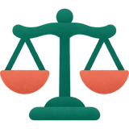
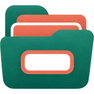

Um guia para organizar pedidos, respostas e próximos passos com o plano de saúde
Entenda seus direitos e siga o caminho recomendado. Preencha aqui mesmo os pedidos, as mensagens e a ficha de acompanhamento e baixe em PDF. Sem cadastro: o que você digita fica só no seu aparelho.

Três ideias para levar com você
Peça sempre um número de protocolo e registre a data, o canal e o nome do atendente, quando disponível.
A operadora deve apresentar uma resposta clara e conclusiva dentro do prazo aplicável. Uma mensagem genérica pode informar o andamento, mas não substitui a conclusão no fim do prazo.
Ouvidoria e ANS/NIP são caminhos úteis e recomendados, mas não são requisitos obrigatórios para buscar orientação jurídica ou medida urgente.
O que você encontra aqui
Guia Cidadão
Entender direitos básicos e agir diante de demora, falta de rede ou negativa.
Mapa da Rota
O caminho recomendado em sete passos, com atalho para cada documento.
Checklist da Família
Marque o que já tem, veja o que falta e baixe a lista em PDF.
Modelos de Comunicação
Preencha os quatro modelos, revise e baixe em PDF. Fica salvo só no seu aparelho.

Base Jurídica
Normas e entendimentos oficiais, sem confundir regra com caso concreto.

Ficha de Acompanhamento
Registre contatos, protocolos, respostas e próximos passos.
Use as ferramentas sem cadastro
Checklist, modelos e ficha de acompanhamento ficam na sua área, salvos só neste aparelho. A equipe do Rota TEA não recebe nem guarda o que você preenche. Para continuar em outro aparelho, baixe uma cópia dos seus dados.

Guia Cidadão
Cobertura, indicação, prazos, falta de rede, negativa e reembolso.
O que costuma ter cobertura obrigatória
Nos planos sujeitos à Lei nº 9.656/1998 e conforme a segmentação contratada, o Rol da ANS prevê atendimento multidisciplinar. Para TEA, as regras da ANS asseguram sessões sem limite numérico com psicologia, fonoaudiologia, terapia ocupacional e fisioterapia, além da cobertura de método ou técnica indicado para o tratamento dentro das condições regulatórias.
- Confira a segmentação, a área de abrangência, as carências e eventual coparticipação do seu contrato.
- Tratamento fora do Rol depende dos critérios legais da Lei nº 14.454/2022; a prescrição, o plano terapêutico e a evidência aplicável importam.
Quem participa da definição do tratamento
A indicação clínica deve partir do profissional ou da equipe assistente. Quando o médico especifica um método ou técnica, a regulação da ANS protege essa indicação. Se a prescrição médica não definir a técnica, o terapeuta habilitado pode escolhê-la dentro de suas competências profissionais e do plano terapêutico. A família deve participar das decisões de cuidado.
Igualdade de tratamento pelo plano
A pessoa com TEA é pessoa com deficiência para todos os efeitos legais (Lei nº 12.764/2012, art. 1º, § 2º). A operadora deve garantir a ela os mesmos serviços oferecidos aos demais clientes e não pode cobrar valores diferentes por causa da deficiência (Lei nº 13.146/2015, arts. 20 e 23; Lei nº 12.764/2012, art. 5º).
- Recusa de contratação, reajuste ou mensalidade diferente motivados pela deficiência podem ser questionados.
- A deficiência não afeta a capacidade civil: a pessoa autista adulta pode fazer os próprios pedidos (Lei nº 13.146/2015, art. 6º).
Prazos que ajudam a acompanhar o pedido
| Situação | Prazo de referência | Norma |
|---|---|---|
| Urgência ou emergência | Atendimento imediato, conforme a cobertura contratada e a legislação. | Lei nº 9.656/1998 e RN nº 566/2022 |
| Resposta a pedido assistencial comum | Em regra, até 5 dias úteis. | RN nº 623/2024 |
| Resposta sobre alta complexidade ou internação eletiva | Até 10 dias úteis. | RN nº 623/2024 |
| Sessões com psicólogo, fonoaudiólogo, terapeuta ocupacional ou fisioterapeuta | Atendimento em até 10 dias úteis. | RN nº 566/2022 |
| NIP assistencial | Até 5 dias úteis para a operadora analisar a solução; os fluxos de resposta à ANS correm de forma concomitante. | RN nº 483/2022 |
Consulte os prazos oficiais atualizados: ANS · Garantia de atendimento
Calcule a data de referência
Conta apenas sábados e domingos como dias não úteis. Feriados não entram no cálculo: confira o calendário da sua cidade.
Se não houver profissional ou vaga na rede
- Peça à operadora que garanta o atendimento dentro do prazo e anote o protocolo.
- A operadora pode indicar outro prestador habilitado, inclusive fora da rede, e deve custear a solução quando não conseguir garantir a rede contratada nas condições regulatórias.
- Se a alternativa exigir deslocamento nas hipóteses previstas pela ANS, registre a necessidade de transporte e acompanhante.
- Se a operadora não garantir o atendimento e a família precisar pagar, pode haver reembolso integral, inclusive de transporte, desde que os requisitos sejam comprovados.
Se o plano negar ou demorar
- Peça a negativa por escrito, com motivo, fundamento contratual ou normativo e instrução para reanálise.
- Guarde prescrição, relatório, pedido, protocolo, resposta e prova de indisponibilidade da rede.
- Peça revisão no próprio atendimento ou na Ouvidoria, se isso puder ajudar. Você também pode registrar reclamação na ANS/NIP.
- Em risco de interrupção relevante, urgência ou agravamento, procure orientação profissional imediatamente.
Sobre reembolso
Há situações diferentes. O reembolso contratual segue a tabela do plano. Na urgência ou emergência sem acesso à rede, a Lei nº 9.656/1998 prevê reembolso nas condições legais. Quando a operadora descumpre a garantia de atendimento e a pessoa paga pelo serviço, a RN nº 566/2022 prevê reembolso integral em até 30 dias da solicitação, inclusive das despesas de transporte cabíveis. A documentação do contato prévio com a operadora é especialmente importante.
Fontes oficiais: prazos e falta de rede • reembolso
Mapa da Rota
Uma página para decidir o próximo passo. Cada etapa leva à ferramenta certa.
Etapas do caminho
Faça o pedido
Envie prescrição e relatório. Peça protocolo.
Acompanhe o prazo
Registre datas. “Em análise” não substitui a resposta final.
Confira a resposta
Autorizou: confirme prestador, início e frequência. Negou: peça justificativa escrita.
Se não houver rede
Peça alternativa dentro do prazo, mesmo fora da rede, e transporte quando cabível.
Peça revisão
Use o atendimento ou a Ouvidoria se a reanálise puder resolver.
Registre na ANS
A NIP pode intermediar. Informe depois se o problema foi resolvido.
Avalie outros caminhos
Procon, Consumidor.gov.br e mediação podem ser adequados ao caso. Para orientação jurídica gratuita, procure a Defensoria Pública, o Núcleo de Prática Jurídica (NPJ) de uma faculdade de Direito ou a assistência judiciária da OAB da sua cidade. O Rota TEA não indica escritórios ou profissionais.
Base Jurídica
Regras principais e entendimentos consolidados, com o que depende de cada caso.
Normas principais
| Fonte | O que regula | Acesso |
|---|---|---|
| Lei nº 9.656/1998 | Contratos, coberturas, urgência e emergência, reembolso e rede. | Planalto |
| Lei nº 14.454/2022 | Critérios legais para cobertura de procedimento fora do Rol da ANS. | Planalto |
| Lei nº 12.764/2012 | Pessoa com TEA é considerada pessoa com deficiência para efeitos legais. | Planalto |
| Lei nº 13.146/2015 | Proteção geral contra discriminação e direitos da pessoa com deficiência. | Planalto |
| RN nº 465/2021 e atualizações | Rol de Procedimentos e Eventos em Saúde. | ANS |
| RN nº 539/2022 e RN nº 541/2022 | Métodos e técnicas no TEA e sessões sem limite numérico. | ANS |
| Parecer Técnico ANS nº 39/2024 | Síntese técnica oficial sobre terapias e métodos para TEA. | ANS |
| RN nº 566/2022 e RN nº 665/2026 | Prazos, falta de rede, transporte, reembolso e regiões de saúde. | ANS/MS |
| RN nº 623/2024 | Protocolo, prazos de resposta, negativa escrita e reanálise. | ANS/MS |
| RN nº 424/2017 | Junta médica em divergência técnico-assistencial. | ANS |
| RN nº 323/2013 | Ouvidoria das operadoras e segunda análise. | ANS |
| RN nº 483/2022 e alterações | Fiscalização e NIP. | ANS |
Precedentes qualificados do STJ
Teses fixadas em recursos repetitivos devem ser seguidas pelos tribunais em casos iguais.
Limite de sessões é abusivo
Julgado pela Segunda Seção em 11 de março de 2026 (acórdão publicado em junho de 2026). Tese fixada: é abusiva a limitação do número de sessões de terapia multidisciplinar (psicologia, fonoaudiologia, fisioterapia e terapia ocupacional) prescritas ao paciente com TEA.
Processos paradigma: REsp 2.153.672/SP e REsp 2.167.050/SP. O tema trata da quantidade de sessões; não decide escolha de clínica, local ou carga horária específica.
Consulta oficial no STJDano moral não é automático
Julgado em março de 2026, o STJ definiu que a recusa indevida de cobertura não gera, por si só, dano moral presumido. É preciso demonstrar elementos concretos de abalo que ultrapassem mero aborrecimento. O tema trata de indenização; não elimina a análise da cobertura ou de medidas urgentes no caso concreto.
Processos paradigma: REsp 2.197.574/SP e REsp 2.165.670/SP. Relator: Min. Ricardo Villas Bôas Cueva.
Consulta oficial no STJMusicoterapia em discussão
Afetado em agosto de 2026 para definir se a operadora deve custear musicoterapia para beneficiário com TEA. Ainda não há tese fixada. Enquanto isso, o STJ determinou a suspensão de recursos sobre o mesmo assunto, conforme a decisão de afetação.
Processos paradigma: REsp 2.242.804/AC e REsp 2.129.469/SP. Relator: Min. Raul Araújo.
Consulta oficial no STJRol da ANS e terapias para TEA
Em 2022, a Segunda Seção entendeu que o Rol da ANS é, em regra, taxativo, admitindo exceções, e destacou a proteção das terapias multidisciplinares para TEA. Depois desse julgamento, a Lei nº 14.454/2022 passou a prever critérios legais para cobertura de tratamento fora do Rol.
Para casos atuais, confira a Lei nº 14.454/2022 e as resoluções da ANS listadas acima.
Entendimentos organizados pelo STJ
Reúne decisões do STJ publicadas até 30 de abril de 2025. Entre os entendimentos listados: abusividade da recusa de terapia multidisciplinar e da limitação de sessões para TEA; cobertura de métodos ou técnicas indicados pelo profissional responsável; cobertura de equoterapia, musicoterapia e hidroterapia; sessões ilimitadas de ABA; e reembolso integral fora da rede quando inexistem profissionais conveniados na localidade, observadas as circunstâncias do caso.
Consulta oficial no STJDecisões em casos concretos
Não têm efeito vinculante, mas mostram como os tribunais têm decidido. O resultado depende das provas e do contrato de cada caso.
Psicopedagogia
Há decisões do STJ reconhecendo a cobertura quando integra o tratamento multidisciplinar, realizada por profissional de saúde em ambiente clínico. Quando realizada na escola ou em casa, a Terceira Turma afastou a obrigação do plano, salvo previsão no contrato.
Coparticipação
A cláusula de coparticipação é válida quando prevista no contrato, mas não pode inviabilizar a continuidade do tratamento. Em terapias intensivas, há decisões que limitaram o valor mensal cobrado da família.
Acompanhante terapêutico escolar
O STJ tem entendido que o acompanhamento em ambiente escolar está ligado à educação e, em regra, não integra a obrigação típica do plano de saúde.
O que não deve virar regra automática
Carga horária específica
Não há uma resposta universal. A necessidade, a evidência, o plano terapêutico, a rede e as provas do caso precisam ser examinados.
Clínica ou profissional escolhido
Decisões favoráveis ao tratamento não significam escolha irrestrita de prestador quando a rede oferece alternativa adequada no prazo.
Reembolso integral
Depende do motivo do atendimento fora da rede e da prova de que a operadora não garantiu a solução devida, além de outras hipóteses legais ou contratuais.
Tutela de urgência e indenização
São decisões ligadas aos fatos e às provas do processo; não podem ser prometidas em material geral. Depois do Tema 1.365, o dano moral depende de prova concreta.
Terapias complementares
Equoterapia, musicoterapia e hidroterapia aparecem em decisões favoráveis, mas há julgados divergentes e a musicoterapia está em julgamento no Tema 1.463. A indicação do profissional e as provas do caso continuam essenciais.
Fontes e orientações de uso
Consultas oficiais e cuidados na utilização do material.
Fontes oficiais principais
- ANS · cobertura e Rol
- ANS · terapias e métodos para TEA
- ANS · prazos máximos e falta de rede
- ANS · NIP
- RN nº 623/2024
- RN nº 566/2022
- STJ · Jurisprudência em Teses 259
- STJ · Tema Repetitivo 1.365
- STJ · Tema Repetitivo 1.295
- STJ · Tema Repetitivo 1.463 (pendente)
- RN nº 424/2017 · junta médica
- RN nº 323/2013 · Ouvidoria
Como utilizar o material
- Comece pelo Mapa da Rota para identificar o próximo passo.
- Use o Checklist para reunir documentos antes de fazer um pedido ou reclamação.
- Adapte os modelos de comunicação aos fatos e evite incluir dados de saúde além do necessário.
- Anexe prescrição, relatórios e laudos só no envio à operadora. O site não recebe nem guarda arquivos.
- Preencha a Ficha de Acompanhamento a cada contato com a operadora, a Ouvidoria ou a ANS.
- Confira as fontes oficiais sempre que houver dúvida sobre prazo, cobertura ou procedimento.
Ressalvas éticas
Este material oferece informação geral e não substitui orientação jurídica individual, avaliação clínica ou contato com a operadora e a ANS. Não divulgue dados pessoais ou de saúde sem necessidade. Registre apenas as informações indispensáveis e preserve a identidade e a privacidade das famílias.
Quem fez o Rota TEA
O Rota TEA é um projeto de extensão de estudantes do curso de Direito da Faculdade Unità, no projeto extensionista “Novas perspectivas sobre a judicialização do autismo”, sob supervisão do Prof. Dr. José Jorge Tannus Neto. O conteúdo é de responsabilidade da equipe de estudantes.
Elaboração colaborativa: diagnóstico participativo de Monique Pissolotto; legislação e regulação de Stefany Karen; pesquisa jurisprudencial de Lucas Giroto; conteúdo cidadão e soluções extrajudiciais de Mateus Teixeira; coordenação e integração de Felipe Pissolotto.
Uso de inteligência artificial
A equipe usou ferramentas de inteligência artificial generativa como apoio na programação do site, na organização do conteúdo e na revisão de texto. Todo o conteúdo jurídico foi conferido pela equipe nas fontes oficiais listadas acima.
Revisão do conteúdo
Última revisão geral: novembro de 2026. Próxima revisão prevista: fevereiro de 2027.
Fale conosco
Dúvidas, sugestões ou algo que não funcionou? Escreva para a equipe do Rota TEA.
Nosso e-mail
- Conte em poucas linhas como podemos ajudar. Se algo não funcionou no site, diga em qual página e o que apareceu na tela.
- Não envie laudos, relatórios, diagnósticos, carteirinha ou outros dados de saúde. Eles não são necessários para responder.
- A equipe não presta orientação jurídica individual. Para isso, procure a Defensoria Pública, o Núcleo de Prática Jurídica de uma faculdade de Direito ou a assistência judiciária da OAB.
- O site não tem formulário e não guarda mensagens. Sua mensagem chega apenas à caixa de e-mail da equipe e é apagada depois de respondida.
Privacidade e termos de uso
Em resumo: o Rota TEA não coleta, não recebe e não guarda o que você preenche.
O que acontece com o que você preenche
Os modelos, a ficha de acompanhamento, o checklist e “Meus dados” funcionam inteiramente no seu navegador. O que você digita fica salvo apenas no armazenamento deste navegador, neste aparelho. Nada é enviado à equipe do Rota TEA nem a qualquer servidor do projeto. Os PDFs também são gerados no seu aparelho.
- Para levar seus dados a outro aparelho, use Baixar cópia: o arquivo fica com você.
- Para apagar tudo, use Apagar tudo deste aparelho, em Minha área, ou limpe os dados do site no seu navegador.
- Em aparelho compartilhado, apague seus dados ao terminar.
- Coloque nos documentos apenas o indispensável. Se o pedido for para uma criança ou adolescente, você pode usar só as iniciais do nome.
O que o site não faz
- Não tem cadastro, login ou senha.
- Não tem formulário de contato nem guarda mensagens.
- Não usa cookies de rastreamento, publicidade ou contador de visitas.
Serviços de terceiros
Para funcionar, o site é hospedado pela Vercel e carrega fontes do Google Fonts, bibliotecas de geração de PDF do jsDelivr e o tradutor de Libras VLibras, do Governo Federal. Esses serviços recebem dados técnicos da conexão (como o endereço IP), como em qualquer site, segundo as políticas de privacidade de cada um. Eles não recebem o conteúdo dos seus documentos.
Contato por e-mail
Se você escrever para contato@rotatea.com.br, a equipe usa seu e-mail e sua mensagem só para responder, e apaga a conversa depois de respondida. A caixa de e-mail do projeto é hospedada pela Zoho, com servidores nos Estados Unidos. Não envie dados de saúde por e-mail.
Termos de uso
- O Rota TEA é material educativo, gratuito, feito por estudantes de Direito em projeto de extensão. Não substitui orientação jurídica individual, avaliação clínica ou o contato com a operadora e a ANS.
- Os modelos são pontos de partida: adapte-os aos fatos do seu caso antes de enviar. Você é responsável pelo conteúdo que envia.
- As normas mudam. Confira sempre a versão vigente nas fontes oficiais indicadas no site.
- O site não indica escritórios, profissionais ou clínicas.
Versão de 21 de novembro de 2026.